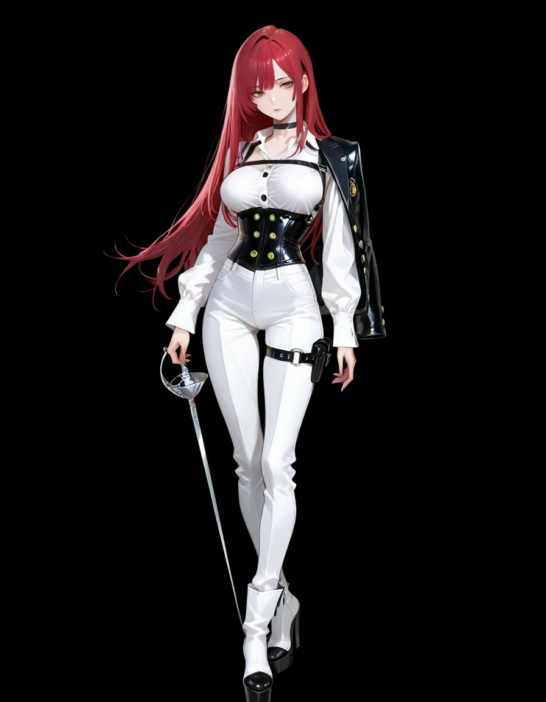
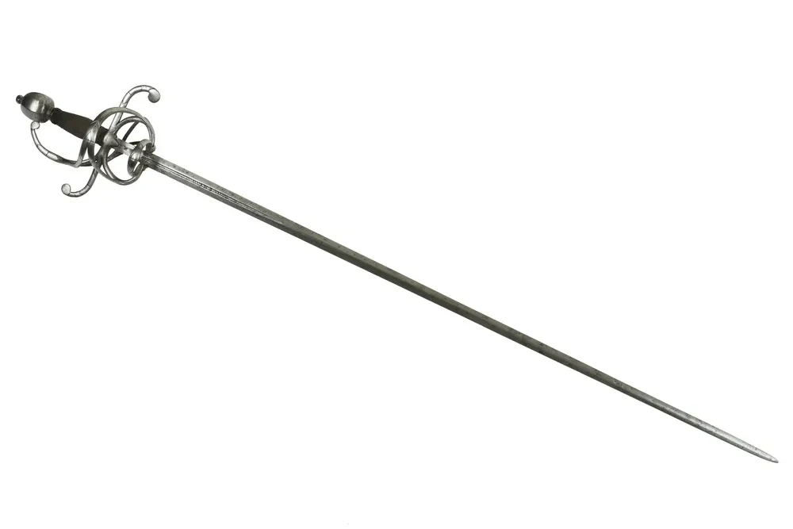
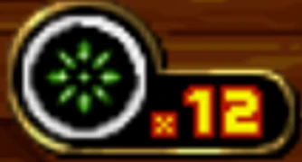
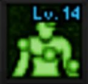
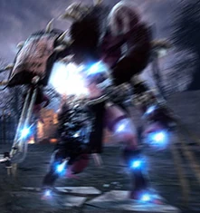
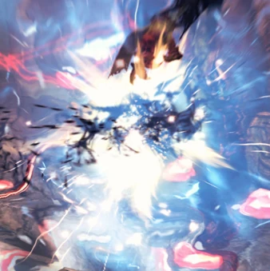

01 전직 개요 및 기획 의도바운티헌터연계 타이밍이 숙련도를 가른다처음에는 익숙한 공격으로 각 스킬의 기본 피해를 낼 수 있다.숙련되면 마지막 타격 직후 후딜레이를 끊어 같은 기회에 더 많은 피해를 줄 수 있다.주 무기레이피어플레이 핵심마지막 타격 직후 연계
02 배경과 성격착안점제국기사 PV 속 짧은 추격이 한 기사의 평생 임무가 된다면?배경데 로스의 귀족 가문 출신이지만, 가문보다 맡은 임무를 중시한다.골든 니들에서 처음 도주한 수배자를 생포한 뒤 제국이 현상금을 건 도망자와 반역 혐의자를 추적한다.
03 무기와 전투 콘셉트형태 참고 / 기획서 수록 이미지무기가벼운 추적, 빠른 발검허리춤에 차고 움직이다 표적을 따라잡으면 즉시 뽑아 찌르고 다음 공격으로 이어간다.전투회수 동작을 끊는 연격르프리즈로 검을 거두는 동작을 끊는다. 이어 쓸 공격의 순서는 플레이어가 정한다.
04-1 핵심 전투 메커니즘명칭발동 조건효과르프리즈공격 스킬 동작 중다른 공격 스킬 입력현재 동작을 끊고 입력한 스킬 즉시 사용.마지막 타격 직후면 피해를 온전히 주고 후딜레이 단축.포앵트각성기 제외 공격 스킬의마지막 타격 적중적에게 점 모양 검흔 1개 부여.대상별 최대 5개, 바로 연계하지 않아도 유지.투셰르프리즈로 이은 스킬의 첫 타격이포앵트가 남은 적에게 적중해당 적의 검흔 전부 소모. 개수에 비례한 추가 피해.검흔 위치에 은빛 섬광으로 발동을 알린다.각성기는 포앵트를 남기지 않는다. 연계 스킬은 직접 고른다.
04-2 스킬 연계 예시01새긴다공격 스킬의 마지막 타격포앵트 1개 부여02끊는다후딜레이 중 다른 공격 입력르프리즈 1회 소모03터뜨린다같은 적에 다음 스킬 첫 타격검흔 전부 소모 · 투셰 추가 피해기획서 수록 참고 이미지머슬시프트 등 기존 게임 예시바운티헌터 인게임 캡처 아님